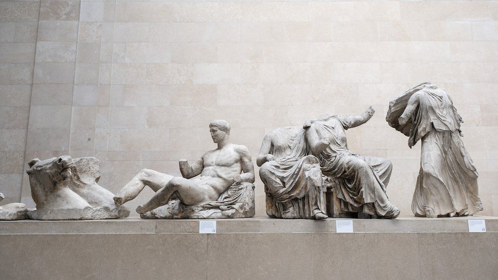

OUDHEID

Parthenon Sculptures
Kunstenaar: Onbekend
Jaar: ca. 447 v.C.
Discipline: Beeldhouwkunst
Deze beelden tonen hoe religie en politieke macht het leven bepaalden. Ze toonden het ideale lichaam waar mensen naar moesten streven. Vandaag gebeurt dit ook via sociale media waar perfecte beelden worden getoond.


Macht – ideaal – controle.
Dit past bij maatschappij omdat kunst een beeld creëerde waar iedereen naar moest streven.